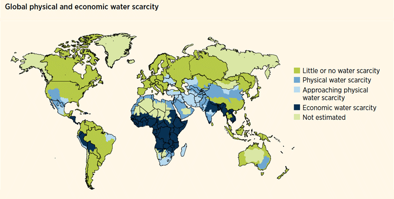

As the population increases, the demand for fresh water is rising, causing water shortages in some parts of the world, not to mention pollution, which makes the water even scarcer. This situation increases the chances of a crisis in some countries. In addition to pollution, there are other causes of water scarcity, such as deforestation of forests and the direct discharge of pollutants into the water. For this reason, solutions are being sought to reduce water scarcity and increase the quality of human life.
Water scarcity already affects all continents. About 1.2 billion people, almost a fifth of the world's population, live in areas of physical water scarcity, while 500 million are close to this situation.
Water scarcity can be the result of two mechanisms: physical (absolute) scarcity of water and economic scarcity of water.
"Of the 210 nations on the planet, 190 have a shortage of water and only 10 are abundant in this resource"
Access to drinking water and basic sanitation in Latin America is insufficient and its quality is also inadequate. That results in negative impacts on public health. The limited financial capacity of the agencies in charge of
providing these services and the weak institutional framework of the sector are factors that limit the possibilities of improving access to and quality of drinking water and sanitation in the continent.
Some 300 million Africans lack access to safe drinking water and at least fourteen countries on the continent suffer from a permanent water deficit. Of the fifty-five countries whose consumption of drinking water per person per day is below the minimum of fifty liters established by the World Health Organization, thirty-five of them are in Africa.
The balance between water needs and available resources is critical in several areas of Europe. Water scarcity and drought threaten more and more seriously. Climate change can further aggravate this situation.
Asia's water supply is already among the most polluted on the planet. In certain areas of China and India, water marks drop annually by one to three meters. As hydrostatic levels and expanses of fertile land decrease, conflicts in this regard are likely to increase.
20-25 liters of water per day is what each human being needs to ensure their basic needs, for drinking, cooking and hygiene. However, 1 out of every 6 people in the world (894 million) does not have access to such a necessary good as water.
The ¾ parts of the earth are made up of water, but most (97%) of this is oceanic (salty). In other words, by volume, only 3% of all the water in the world is freshwater, and only 1% is available for treatment and human consumption.

North and Central America = 15% water / 8% population
South America = 26% water / 6% population
Europe = 8% water / 13% population
Africa = 11% water / 13% population
Asia = 36% water / 60% population
Australia and Oceania = 5% water / < 1% population
Water scarcity and poverty are directly interrelated, affecting main
The pollution of rivers and underground aquifers is produced mainly through the dumping of industrial waste. Although to a great extent also due to the waste that we throw from the drains of our houses, which in a big city supposes tons, every day.
Also agricultural residues, such as pesticides, which reduces the amounts of drinking water or suitable for human consumption in its different possibilities.
The world population continues to grow and the increasingly westernized lifestyle invites little to the rational consumption of water. On the other hand, agriculture consumes 70% of the drinking water used by man. As food demand grows, so will water consumption.
If the population continues to increase at this current rate, from the current 6,000 million they will become 8,900 million in 2050. The demand for drinking water or fresh water will be very delicate for those dates if changes are not made to solve the problem from now on. According to the latest United Nations report,
7 billion people will suffer from water shortages in 2050.
Global warming is producing a lower incidence of rainfall in some parts of the world, which is one of the largest sources of drinking water. Volcanic eruptions and earthquakes pollute groundwater and rivers with toxic gases.
The Middle East stands out as the most vulnerable region. 14 of the 33 countries most likely to face water supply cuts are there. Among them, there are nine countries that could suffer heavily from water shortages: Bahrain, Kuwait, Palestine, the United Arab Emirates, Saudi Arabia, Oman and Lebanon.
There are other countries that will most likely experience supply cuts. These include the United States, China and India. Some provinces, such as the American Southwest or China's Ningxia Autonomous Region, could face huge shortages.
Some solutions to reduce water pollution and thus reduce water scarcity are the following:
-Reduction of plastics on the planet. This will reduce the appearance of plastics in the sea, which is what affects the planet the most.
-Sustainable management of this water resource. We refer to the sewage that comes out of the houses to stop directly into the sea
without having been previously treated. This water affects the scarcity of water since there is no longer any certainty as to which river
is safe to use because sewage may flow through it. That is why the creation of possible treatment plants so that this wastewater can be
cleaned and directed to the rivers or seas without affecting the environment.